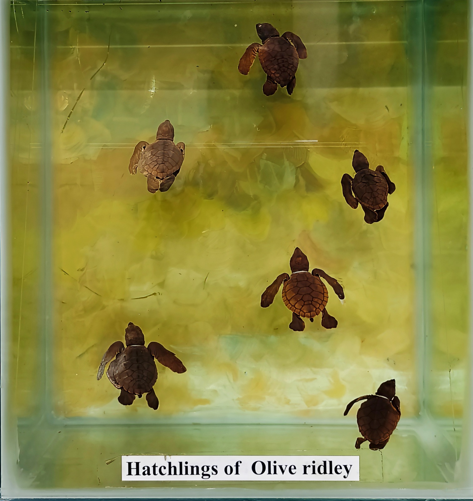

2015 年，海洋生物學家 Christine Figgener 在哥斯大黎加做欖蠵龜的研究。 她的團隊抓到了一隻公龜，準備測量、記錄。
但是，他們發現這隻海龜的鼻子裡卡著奇怪的東西。 一開始以為是寄生蟲——拉了一下，海龜痛得發抖。
整整 8 分鐘的影片
團隊用鉗子，一點一點地拔。海龜不停地痛苦哀鳴，鼻子流血。 他們用瑞士刀切短，再拉一段——再切，再拉。
整整 8 分鐘後，他們拉出了一根10 公分長的塑膠吸管， 深深塞在牠的鼻腔裡。
這支影片在 YouTube 被看了超過 1 億次。 後來歐盟、台灣、加拿大、新加坡、日本， 都因為這 8 分鐘改變了塑膠吸管的政策。
台灣也跟著改變
台灣在 2019 年宣布內用禁吸管，主因之一就是這支影片。 現在你去手搖飲店，內用會給你紙吸管——這就是那根吸管帶來的改變。
一根吸管真的改變了一個國家——其實是改變了好幾個國家。

下次你拿到吸管時……
想想看：你今天會喝幾杯飲料？這幾根吸管， 最後可能會變成哪一隻海龜的痛苦？
如果不需要，就跟店員說「不用吸管」——這是最簡單的偵查行動。
Source · Christine Figgener (Texas A&M University) YouTube 公開影片（2015）； Olive Ridley Sea Turtle 影像 © CC BY-SA 4.0 Wikimedia Commons